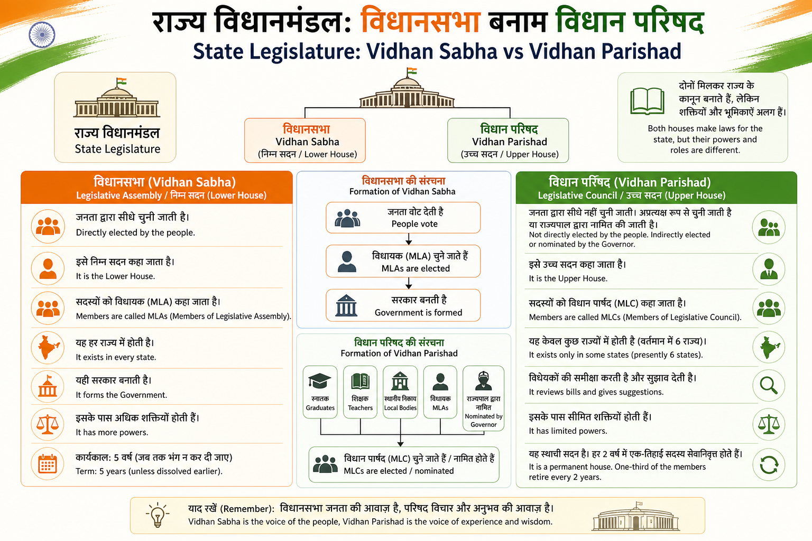

Vidhan Sabha
- Isko Legislative Assembly bhi bolte hain.
- Members ko MLA kehte hain.
- MLA direct public vote se elect hote hain.
- State government usually Vidhan Sabha majority se banti hai.
- Term normally 5 years hoti hai, lekin dissolve ho sakti hai.
Vidhan Parishad
- Isko Legislative Council bhi bolte hain.
- Members ko MLC kehte hain.
- MLC indirect election/nomination se aate hain.
- Ye bills ko review karta hai aur suggestions deta hai.
- Ye permanent house hota hai; one-third members har 2 saal retire hote hain.
Easy memory: Vidhan Sabha = public ka direct house. Vidhan Parishad = review/advice wala upper house, jo sirf kuch states mein hota hai.